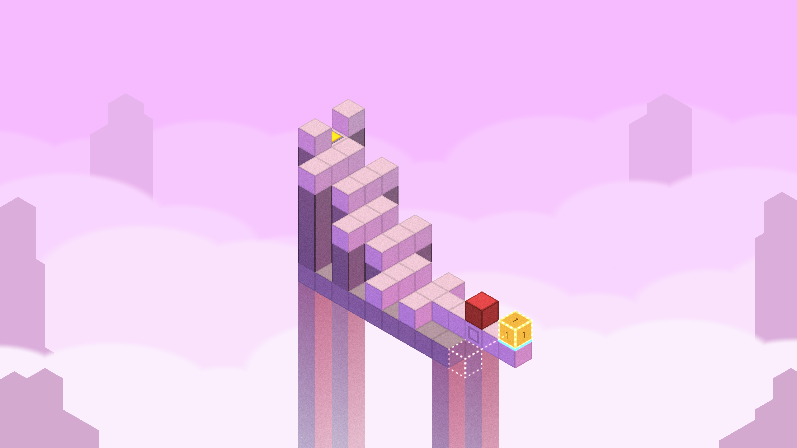
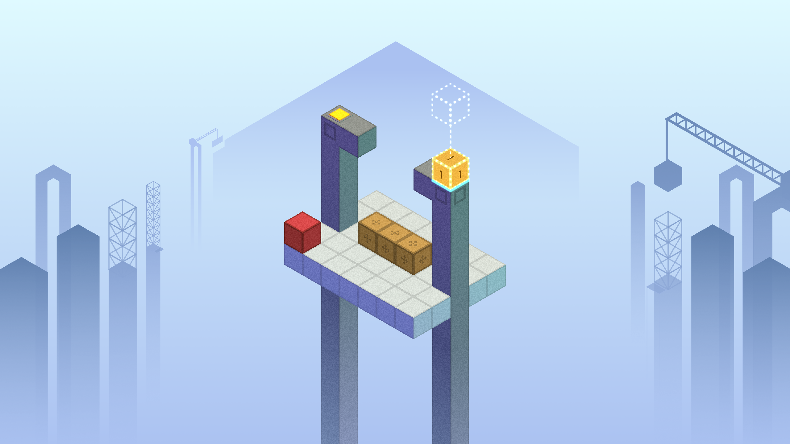

A Little Perspective |
|
|
Game by Tad Cordle A Little Perspective is a grid-based puzzle game with unique twists revolving around line-of-sight, object permanence, and spatial awareness.   The game is a remake/upgrade of my most popular Dreams project under the same name, which took about 3 months to build/release. The remake has been in the works since October 2023, and it is being built in my free time using Raylib and FMOD. |